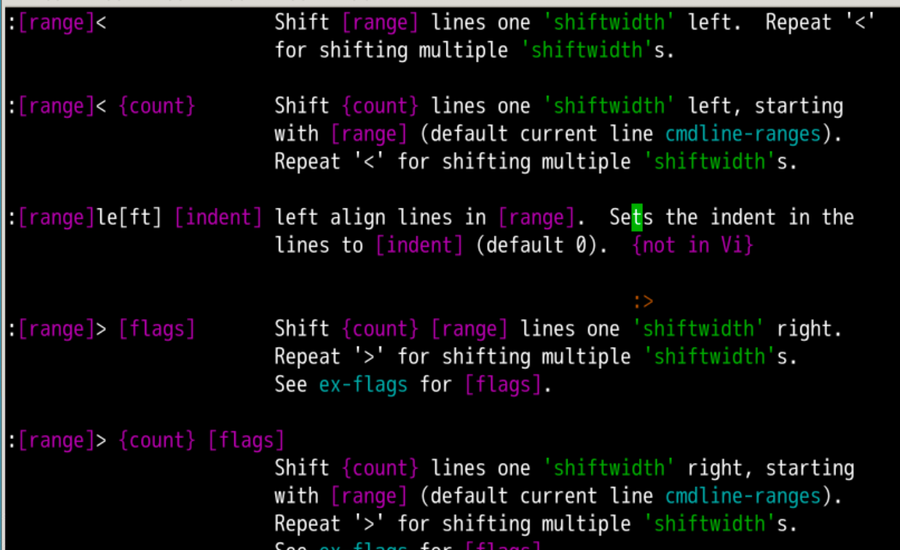
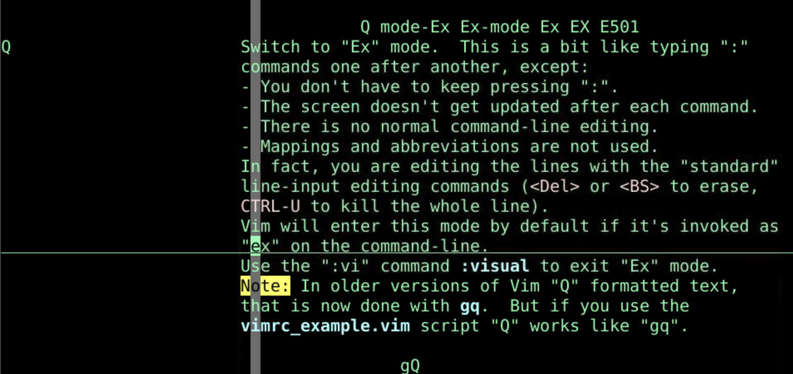
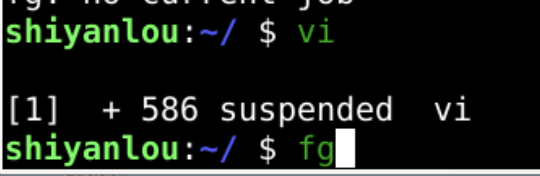
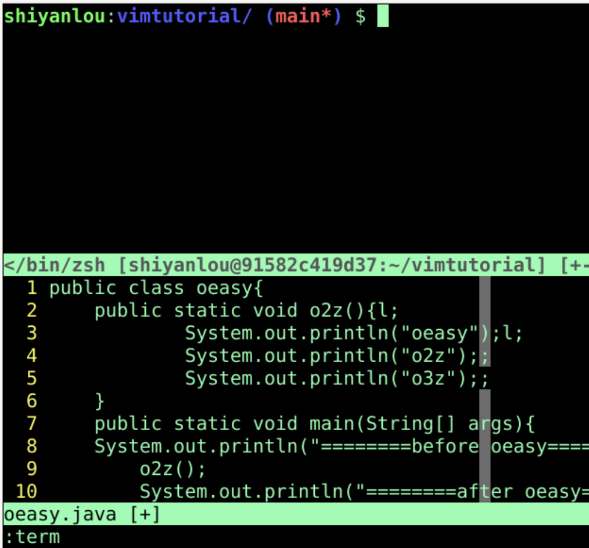
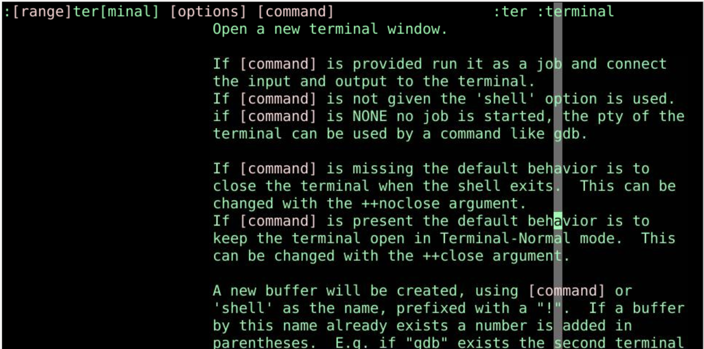
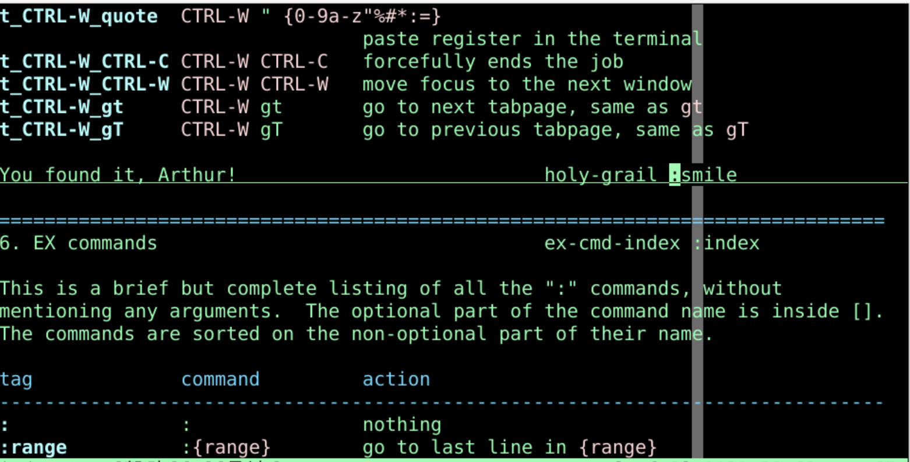

shiftwidthshiftwidth:h 'shiftwidth':20,40>20-40 行向右一个 shiftwidth:'a,$>a标记 到 结尾 向右一个 shiftwidth%< shiftwidth
:4,10normal A;range,先打上:4,10normal 格式再:4,10normal切换为normal模式 A;;:4,10normal A;思考
8,15行添加//应该如何做呢？但是这些都是执行 vim 的内部命令
shell 中的 ls 可以么？ls!就可以:!ls!javac oeasy.java!source o2z.sh!python3 %Normal 模式下直接按下Q:ls:1,3d:1,7p:visual 退回到正常模式visual 是 vi 名字的来源vi 就是ed + 可视化模式 visual 
shell 运行 vim 然后进来的vim 的话需要保存并退出:wqvim 整个进程先挂起放到后台vim 切出去了shell 运行完命令之后fg就可以把vim切回到前台
vim 的情况下shell 命令么？:term:termexit 退出 shell 
:term 什么意思 :h什么:h :term
:h :smile 可以找到关于 smile 命令的帮助
:20,40>:4,10normal A;全屏命令模式 ex-modeQ!javac oeasy.java:termvi 什么都干了！